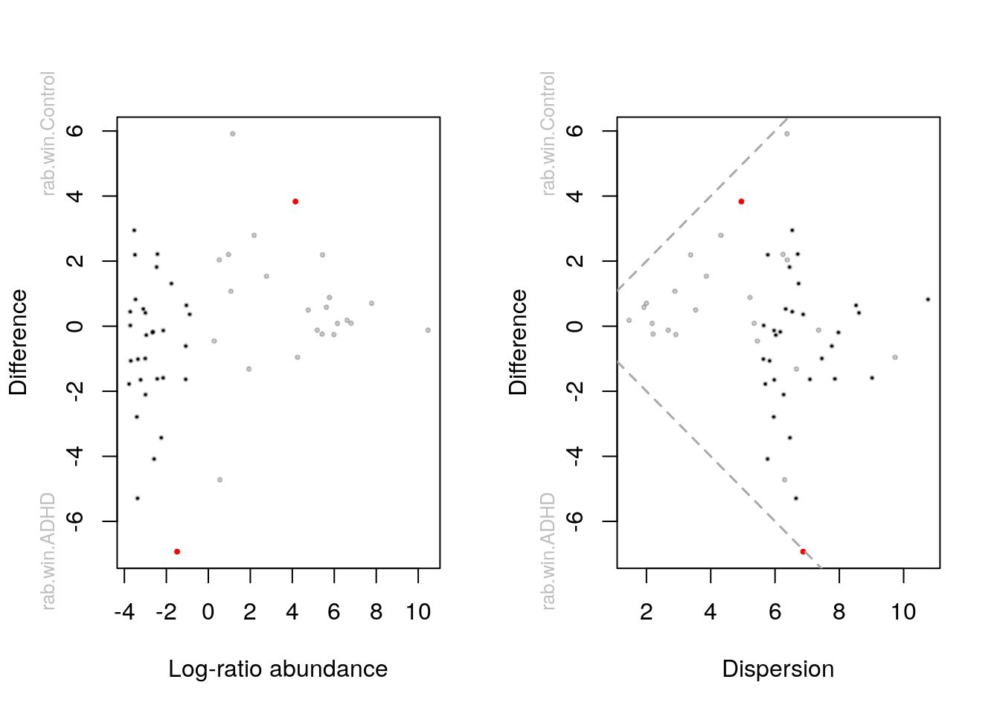
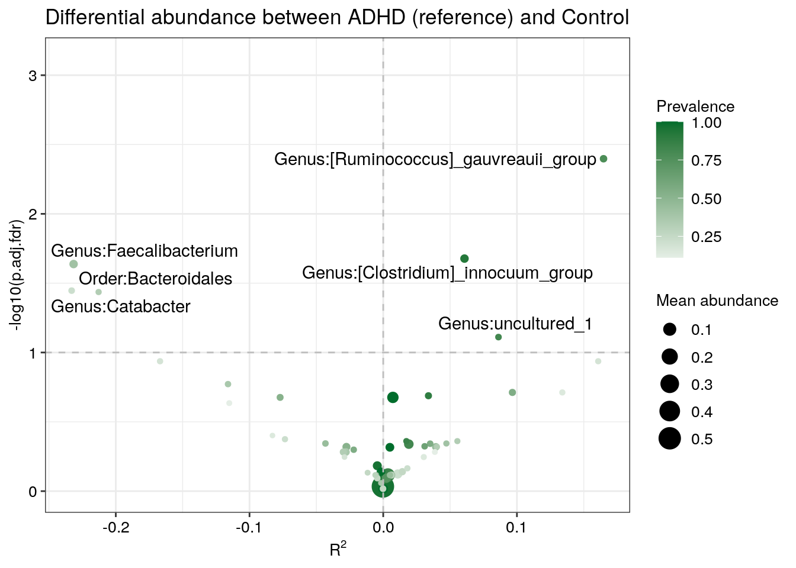

Chapter 11 Differential Abundance
This section provides an introduction to Differential Abundance Analysis (DAA), which is used to identify differences in the abundances of individual taxa (at any taxonomic level) between two or more groups, such as treatment and control. Here, we demonstrate its implementation on Tengeler2020, described in chapter 3.3.1.1.
The goal of DAA is to identify biomarkers of a certain phenotype or condition, and gain understanding of a complex system by looking at its isolated components. For example, the identification of a bacterial taxon that is differentially abundant between healthy patients and diseased patients can lead to important insights into the pathophysiology of the disease. In other words, differentially abundant taxa can be involved in the dynamics of the disease, which in turn helps understand the system as a whole. Despite its relevance in current research, the DAA approach has also been subject to debate (Quinn, Gordon-Rodriguez, and Erb 2021).
11.1 Statistical challenges of microbiome data
Microbiome data display unique properties that are exclusively addressed by DAA tools developed for microbiome analysis. Specifically, microbiome data are characterized by high variability, zero-inflation and compositionality. High variability expresses that abundance of taxa often varies by several orders of magnitude from sample to sample. Zero-inflation means that typically more than 70% of the values are zeros, which could be due to either physical absence (structural zeros) or insufficient sampling effort (sampling zeros). Compositionality implies that a change in the absolute abundance of one taxon will lead to apparent variations in the relative abundances of other taxa in the same sample. If neglected, such properties may cause significant bias in the results of DAA. Therefore, several approaches have been developed to address the unique properties of microbiome data and provide statistically useful results.
The first approach to target zero-inflated data consists of specialized models, such as over-dispersed count models and zero-inflated mixture models. DESeq2, edgeR and corncorb are based on over-dispersed count models, whereas metagenomeSeq, RAIDA, ZIBB and Omnibus implement zero-inflated mixture models to address zero-inflation. Typically, these models assume a negative binomial, beta-binomial or normal/log-normal distribution. Alternatively, zero imputation also represents a valid approach to deal with zero-inflated data. ALDEx2 and eBay apply a Bayesian model to impute the zeros when working with proportion data, accounting for sampling variability and sequencing depth variation. Other methods, such as MaAsLin2 and ANCOMBC impute the zeros with a pseudo-count strategy.
Regarding the compositionality of microbiome data, several approaches have been developed to perform robust normalization with methods specifically designed to reduce the bias found in compositional data. Some examples include trimmed mean of M-values (TMM) normalization used by edgeR, relative log expression (RLE) normalization used by DESeq2, cumulative sum scaling (CSS) normalization used by metagenomeSeq, centered log-ratio transformation (CLR) normalization used by ALDEx2 and geometric mean of pairwise ratios (GMPR) normalization used by Omnibus and Wrench normalization (Kumar et al. 2018), which corrects the compositional bias by an empirical Bayes approach. Other methods to deal with compositional data entail reference taxa approach used by DACOMP and RAIDA, analyzing the pattern of pairwise log ratios as done by ANCOM and bias-correction applied by ANCOMBC.
We recommend to have a look at Nearing et al. (2022). In this study, multiple DAA methods were applied to 38 different datasets and their results were compared to one another. Because each method follows a slightly different approach in terms of assumptions and normalization techniques, it was shown that results on the same dataset may differ substantially depending on the method. Recently, Yang and Chen (2022) comprehensively evaluated DAA methods via a semi-parametric framework and 106 real datasets. This study also concluded that different methods can produce contradictory results, creating the risk of cherry-picking the most favorable options for one’s own hypothesis. Therefore, it is highly recommended to perform DAA with multiple methods to determine whether the findings can be reproduced by different approaches. Built on the findings of Calgaro et al. (2020), the benchdamic (Calgaro et al. 2022) package could offer a valuable support in this regard. Through a comprehensive evaluation process it serves both practitioners by comparing DA methods from existing literature, and method developers by providing an impartial tool to evaluate their new approaches in comparison to what is already available. For details, check its extensive vignette.
11.2 Using the tools
In this section we demonstrate the use of four methods that can be recommended based on recent literature (ANCOM-BC (Lin and Peddada 2020), ALDEx2 (Gloor, Macklaim, and Fernandes 2016), Maaslin2 (Mallick, Rahnavard, and McIver 2020), LinDA (H. Zhou et al. 2022) and ZicoSeq (Yang and Chen 2022)).
The purpose of this section is to show how to perform DAA in R, not how to correctly do causal inference. Depending on your experimental setup and your theory, you must determine how to specify any model exactly. E.g., there might be confounding factors that might drive (the absence of) differences between the shown groups that we ignore here for simplicity. Or your dataset is repeated sampling design, matched-pair design or the general longitudianl design. We will demonstrate how to include covariates in those models. We picked a dataset that merely has microbial abundances in a TSE object as well as a grouping variable in the sample data. We simplify the examples by only including two of the three groups.
library(mia)
library(tidyverse)
# Import dataset
data("Tengeler2020", package = "mia")
tse <- Tengeler2020
# Show patient status by cohort
table(tse$patient_status, tse$cohort) %>%
knitr::kable()| Cohort_1 | Cohort_2 | Cohort_3 | |
|---|---|---|---|
| ADHD | 4 | 5 | 4 |
| Control | 6 | 5 | 3 |
11.2.1 Preparing the data for DAA
Before starting the analysis, it is recommended to reduce the size and complexity of the data to make the results more reproducible. For this purpose, we agglomerate the features by genus and filter them by a prevalence threshold of 10%.
# Agglomerate by genus and subset by prevalence
tse <- subsetByPrevalentTaxa(tse,
rank = "Genus",
prevalence = 10 / 100)
# Transform count assay to relative abundances
tse <- transformAssay(tse,
assay.type = "counts",
method = "relabundance")While some DAA tools provide optional arguments for prevalence filtering, here we filtered the tse object directly. This way, we ensure that the input data remains the same when multiple tools are used.
11.2.2 ALDEx2
In this section, we will show how to perform DAA with ALDEx2, which can be regarded as the method of choice for its consistency, as it normally identifies features that are also found by complementary methods (Nearing et al. 2022). A more extensive introduction to its functionality is available in the ALDEx2 vignette.
ALDEx2 estimates technical variation within each sample per taxon by utilizing
the Dirichlet distribution. It furthermore applies the CLR transformation (or
closely related log-ratio transforms). Depending on the experimental setup, it
will perform a two sample Welch’s t-test and Wilcoxon test or a one-way ANOVA
and Kruskal-Wallis test. For more complex study designs, there is a possibility
to utilize the glm functionality within ALDEx2. The Benjamini-Hochberg
procedure is applied by default to correct for multiple testing.
# Load package
library(ALDEx2)
# Generate Monte Carlo samples of the Dirichlet distribution for each sample.
# Convert each instance using the centered log-ratio transform.
# This is the input for all further analyses.
set.seed(123)
x <- aldex.clr(assay(tse), tse$patient_status) The t-test:
# calculates expected values of the Welch's t-test and Wilcoxon rank
# test on the data returned by aldex.clr
x_tt <- aldex.ttest(x, paired.test = FALSE, verbose = FALSE)Effect sizes:
# Determines the median clr abundance of the feature in all samples and in
# groups, the median difference between the two groups, the median variation
# within each group and the effect size, which is the median of the ratio
# of the between group difference and the larger of the variance within groups
x_effect <- aldex.effect(x, CI = TRUE, verbose = FALSE)
# combine all outputs
aldex_out <- data.frame(x_tt, x_effect)Now, we can create a so called Bland-Altman or MA plot (left). It shows the association between the relative abundance and the magnitude of the difference per sample. Next to that, we can also create a plot that shows the dispersion on the x-axis instead of log-ratio abundance. Red dots represent genera that are differentially abundant (\(q \leq 0.1\)) between the 2 groups. Black points are rare taxa and grey ones are abundant taxa. The dashed line represent an effect size of 1. Gloor, Macklaim, and Fernandes (2016) provides more information on these plots.
par(mfrow = c(1, 2))
aldex.plot(aldex_out,
type = "MA",
test = "welch",
xlab = "Log-ratio abundance",
ylab = "Difference",
cutoff = 0.05)
aldex.plot(aldex_out,
type = "MW",
test = "welch",
xlab = "Dispersion",
ylab = "Difference",
cutoff = 0.05)
The evaluation as differential abundant in above plots is based on the corrected p-value. According to the ALDEx2 developers, the safest approach is to identify those features where the 95% CI of the effect size does not cross 0. As we can see in below table, this is not the case for any of the identified genera (see overlap column, which indicates the proportion of overlap). Also, the authors recommend to focus on effect sizes and CIs rather than interpreting the p-value. To keep the comparison simple, we will here use the p-value as decision criterion. But please be aware that the effect size together with the CI is a better answer to the question we are typically interested in.
aldex_out %>%
rownames_to_column(var = "Genus") %>%
# here we choose the wilcoxon output rather than t-test output
filter(wi.eBH <= 0.05) %>%
dplyr::select(Genus, we.eBH, wi.eBH, effect, overlap) %>%
knitr::kable()| Genus | we.eBH | wi.eBH | effect | overlap |
|---|---|---|---|---|
| [Ruminococcus]_gauvreauii_group | 0.0664 | 0.0345 | 0.8184 | 0.1142 |
11.2.3 ANCOM-BC
The analysis of composition of microbiomes with bias correction (ANCOM-BC) (Lin and Peddada 2020) is a recently developed method for differential abundance testing. It is based on an earlier published approach (Mandal et al. 2015). The previous version of ANCOM was among the methods that produced the most consistent results and is probably a conservative approach (Nearing et al. 2022). However, the new ANCOM-BC method operates quite differently compared to the former ANCOM method.
As the only method, ANCOM-BC incorporates the so called sampling fraction into the model. The latter term could be empirically estimated by the ratio of the library size to the microbial load. According to the authors, ignoring variations in this sampling fraction would bias DAA results. Furthermore, this method provides p-values and confidence intervals for each taxon. It also controls the FDR and it is computationally simple to implement.
Note that the original method was implemented in the ancombc() function (see
extended tutorial).
The method has since then been updated and new features have been added to enable
multi-group comparisons and repeated measurements among other improvements.
We do not cover the more advanced features of ANCOMBC in this tutorial
as these features are documented in detail in this
tutorial.
We now proceed with a simple example. First, we specify a formula. In this formula, other covariates could potentially be included to adjust for confounding. We show this further below. Again, please make sure to check the function documentation as well as the linked tutorials to learn about the additional arguments that we specify.
# Load package
library(ANCOMBC)
# Run ANCOM-BC at the genus level and only including the prevalent genera
ancombc2_out <- ancombc2(data = tse,
assay_name = "counts",
fix_formula = "patient_status",
p_adj_method = "fdr",
prv_cut = 0,
group = "patient_status",
struc_zero = TRUE,
neg_lb = TRUE,
# multi group comparison is deactivated automatically
global = TRUE)The object out contains all model output. Again, see the
documentation of the
function
under Value for details. Our question whether taxa are
differentially abundant can be answered by looking at the res
object, which contains dataframes with the coefficients, standard
errors, p-values and q-values. Below we show the first entries of this
dataframe.
# store the FDR adjusted results
ancombc2_out$res %>%
dplyr::select(taxon, lfc_patient_statusControl, q_patient_statusControl) %>%
filter(q_patient_statusControl < 0.05) %>%
arrange(q_patient_statusControl) %>%
head() %>%
knitr::kable()| taxon | lfc_patient_statusControl | q_patient_statusControl |
|---|---|---|
| Subdoligranulum | 1.909 | 0.0010 |
| Ruminococcus_1 | 2.915 | 0.0010 |
| [Ruminococcus]_gauvreauii_group | 1.520 | 0.0014 |
| [Eubacterium]_rectale_group | 1.361 | 0.0050 |
| [Clostridium]_innocuum_group | 1.455 | 0.0052 |
| Dielma | 1.166 | 0.0052 |
11.2.4 MaAsLin2
Let us next illustrate MaAsLin2 (Mallick, Rahnavard, and McIver 2020). This method is based on generalized linear models and flexible for different study designs and covariate structures. For details, check their Biobakery tutorial.
# Load package
library(Maaslin2)
# maaslin expects features as columns and samples as rows
# for both the abundance table as well as metadata
# We can specify different GLMs/normalizations/transforms.
# specifying a ref is especially important if you have more than 2 levels
maaslin2_out <- Maaslin2(input_data = as.data.frame(t(assay(tse))),
input_metadata = as.data.frame(colData(tse)),
output = "DAA example",
transform = "AST",
fixed_effects = "patient_status",
# you can also fit MLM by specifying random effects
# random_effects = c(...),
reference = "patient_status,Control",
normalization = "TSS",
standardize = FALSE,
# filtering was previously performed
min_prevalence = 0)Which genera are identified as differentially abundant? (leave out “head” to see all).
| feature | metadata | value | coef | stderr | pval | name | qval | N | N.not.zero |
|---|---|---|---|---|---|---|---|---|---|
| X.Ruminococcus._gauvreauii_group | patient_status | ADHD | -0.0674 | 0.0133 | 0.0000 | patient_statusADHD | 0.0015 | 27 | 21 |
| Faecalibacterium | patient_status | ADHD | 0.1223 | 0.0372 | 0.0030 | patient_statusADHD | 0.0448 | 27 | 11 |
| X.Clostridium._innocuum_group | patient_status | ADHD | -0.0692 | 0.0213 | 0.0033 | patient_statusADHD | 0.0448 | 27 | 25 |
| Catabacter | patient_status | ADHD | 0.0295 | 0.0092 | 0.0037 | patient_statusADHD | 0.0448 | 27 | 9 |
This will create a folder that is called like in the output specified above. It contains also figures to visualize difference between significant taxa.
11.2.5 LinDA
Lastly, we cover linear models for differential abundance analysis of microbiome compositional data (H. Zhou et al. (2022)). This is very similar to ANCOMBC with few differences: 1) LinDA corrects for the compositional bias differently using the mode of all regression coefficients. 2) it is faster (100x-1000x than ANCOMBC and according to the authors); 3) it supports hierarchical models. The latest ANCOMBC versions are also supporting hierarchical models. Nevertheless, LinDA seems a promising tool that achieves a very good power/fdr trade-off together with ANCOMBC according to the review. The speed improvements might make it critical especially for datasets that have higher sample or feature set sizes.
# Load package
library(MicrobiomeStat)
# Run LinDA
linda_out <- linda(feature.dat = as.data.frame(assay(tse)),
meta.dat = as.data.frame(colData(tse)),
formula = "~ patient_status",
alpha = 0.05,
prev.filter = 0,
mean.abund.filter = 0)## 0 features are filtered!
## The filtered data has 27 samples and 49 features will be tested!
## Pseudo-count approach is used.
## Fit linear models ...
## Completed.# List genera for which H0 could be rejected:
linda_out$output$patient_statusControl %>%
filter(reject) %>%
dplyr::select(stat, padj) %>%
rownames_to_column(var = "feature") %>%
knitr::kable()| feature | stat | padj |
|---|---|---|
| Faecalibacterium | -4.250 | 0.0092 |
| [Ruminococcus]_gauvreauii_group | 4.110 | 0.0092 |
| Catabacter | -3.379 | 0.0390 |
11.2.6 ZicoSeq
Subsequently, we demonstrate DAA with ZicoSeq, a method based on linear models and permutation. Further details can be found in this tutorial. This approach has been assessed to exhibit high power and a low false discovery rate, which has the following components:
- Winsorization to decrease the influence of outliers;
- Posterior sampling based on a beta mixture prior to address sampling variability and zero inflation;
- Reference-based multiple-stage normalization to address compositional effects;
# Load package
library(GUniFrac)
set.seed(123)
zicoseq_out <- ZicoSeq(feature.dat = as.matrix(assay(tse)),
meta.dat = as.data.frame(colData(tse)),
grp.name = "patient_status",
feature.dat.type = "count",
return.feature.dat = TRUE,
prev.filter = 0,
mean.abund.filter = 0,
max.abund.filter = 0,
perm.no = 999)## For sample size less than 40, posterior sampling will not be used!
## 0 features are filtered!
## The data has 27 samples and 49 features will be tested!
## On average, 1 outlier counts will be replaced for each feature!
## Finding the references ...
## Permutation testing ...
## ...................................................................................................
## ...................................................................................................
## ...................................................................................................
## ...................................................................................................
## ...................................................................................................
## ...................................................................................................
## Completed!zicoseq_res <- cbind.data.frame(p.raw = zicoseq_out$p.raw,
p.adj.fdr = zicoseq_out$p.adj.fdr)
zicoseq_res %>%
filter(p.adj.fdr < 0.05) %>%
arrange(p.adj.fdr) %>%
knitr::kable()| p.raw | p.adj.fdr | |
|---|---|---|
| [Ruminococcus]_gauvreauii_group | 0.001 | 0.005 |
| Faecalibacterium | 0.001 | 0.024 |
| [Clostridium]_innocuum_group | 0.003 | 0.024 |
| Catabacter | 0.006 | 0.043 |
## x-axis is the effect size: R2 * direction of coefficient
ZicoSeq.plot(ZicoSeq.obj = zicoseq_out,
pvalue.type = 'p.adj.fdr')
11.2.7 PhILR
PhILR is a tree-based method that tests group-wise associations based on balances. A detailed introduction to this method is available in this Bioconductor tutorial.
11.2.8 Comparison of methods
Although the methods described above yield unidentical results, they are expected to agree on a few differentially abundant taxa. To draw more informed conclusions, it is good practice to compare the outcomes of different methods in terms of found features, their effect sizes and significances, as well as other method-specific aspects. Such comparative approach is outlined in this exercise.
11.3 DAA with confounding
Confounders can be defined as variables that are related to and affect the apparent dynamics between the response and the main independent variable. They are common in experimental studies. Generally, they can be classified into 3 groups:
Biological confounders, such as age and sex
Technical confounders produced during sample collection, processing and analysis
Confounders resulting from experimental models, such as batch effects and sample history
Controlling for confounders is an important practice to reach an unbiased conclusion. To perform causal inference, it is crucial that the method is able to include confounders in the model. This is not possible with statistical tests of general use, such as the Wilcoxon test. In contrast, methods that target DAA, such as those described in this chapter, allow controlling for confounders. In the following examples, we will perform DAA with a main independent variable and a few confounders.
11.3.1 Selecting confounders
In addition to patient status, we will now control for two confounders: cohort and library size. The former is a categorical variable with three factors, whereas the latter is a discrete numerical variable. Remarkably, most DAA methods accept these two and several other data types.
For demonstration, library size is treated as a confounder and included in the formulas of the DAA methods. Although this is a satisfactory approach to control for uneven sequencing efforts across samples, rarefaction generally represents a better solution (Schloss 2023). With that said, library size can be readily computed and added to the colData.
11.3.2 ANCOM-BC
Here, confounders can be added to the formula along with patient status, the main outcome variable. This way, the model evaluates whether differentially abundant taxa are associated with one of the variables when the other two are kept constant.
# perform the analysis
ancombc2_out <- ancombc2(tse,
assay_name = "counts",
fix_formula = "patient_status + cohort + library_size",
p_adj_method = "fdr",
lib_cut = 0,
group = "patient_status",
struc_zero = TRUE,
neg_lb = TRUE,
alpha = 0.05,
# multi-group comparison is deactivated automatically
global = TRUE)In the output, each taxon is assigned with several effect sizes (lfc, which stands for log-fold change) and adjusted p-values (q). For categorical variables such as patient status and cohort, the statistics indicate whether the abundance of a given taxon is significantly different between the specified group (column name) and the reference group (the group that does not appear in the column names), whereas for numerical variables such as library size, they indicate whether the abundance of a given taxon varies with that variable.
ancombc2_out$res %>%
dplyr::select(starts_with(c("taxon", "lfc", "q"))) %>%
arrange(q_patient_statusControl) %>%
head() %>%
knitr::kable()| taxon | lfc_(Intercept) | lfc_patient_statusControl | lfc_cohortCohort_2 | lfc_cohortCohort_3 | lfc_library_size | q_(Intercept) | q_patient_statusControl | q_cohortCohort_2 | q_cohortCohort_3 | q_library_size |
|---|---|---|---|---|---|---|---|---|---|---|
| Akkermansia | -0.8599 | 0.2309 | 0.2876 | 0.4635 | 0 | 0 | 0 | 0 | 0 | 0.9147 |
| Hungatella | -0.0695 | -0.3270 | -0.1397 | -0.1151 | 0 | 0 | 0 | 0 | 0 | 0.0593 |
| Ruminococcaceae_UCG-013 | -0.9344 | -0.3371 | 0.6599 | -0.0231 | 0 | 0 | 0 | 0 | 0 | 0.0050 |
| Bacteroides | -0.3081 | -0.7575 | 0.1482 | 0.7615 | 0 | 0 | 0 | 0 | 0 | 0.9650 |
| Escherichia-Shigella | -1.1600 | -0.5157 | 1.3093 | 0.2340 | 0 | 0 | 0 | 0 | 0 | 0.0397 |
| [Clostridium]_innocuum_group | -0.7590 | 0.7781 | -0.1629 | 0.1688 | 0 | 0 | 0 | 0 | 0 | 0.0593 |
11.3.3 LinDA
As in the previous method, confounders can be included in the formula with the main outcome variable.
linda_out <- linda(as.data.frame(assay(tse, "counts")),
as.data.frame(colData(tse)),
formula = "~ patient_status + cohort + library_size",
alpha = 0.05,
prev.filter = 0,
mean.abund.filter = 0)## 0 features are filtered!
## The filtered data has 27 samples and 49 features will be tested!
## Imputation approach is used.
## Fit linear models ...
## Completed.The model returns an output for every variable included in the formula. Normally, only the results on the main outcome variable are relevant and can be retrieved as shown below. However, the statistics on the confounders can be similarly obtained by accessing the corresponding items from the output object.
# Select results for the patient status
linda_res <- linda_out$output$patient_statusControl
linda_res %>%
filter(reject) %>%
dplyr::select(log2FoldChange, stat, padj) %>%
rownames_to_column(var = "feature") %>%
head() %>%
knitr::kable()| feature | log2FoldChange | stat | padj |
|---|---|---|---|
| Faecalibacterium | -5.921 | -4.521 | 0.0041 |
| Erysipelatoclostridium | 3.743 | 3.010 | 0.0451 |
| [Ruminococcus]_gauvreauii_group | 4.240 | 4.534 | 0.0041 |
| Barnesiella | -3.878 | -3.116 | 0.0411 |
| Ruminococcaceae_UCG-014 | -3.062 | -3.637 | 0.0193 |
| Butyricicoccus | -2.357 | -3.127 | 0.0411 |
The output shows effect sizes in terms of log-fold changes and a derived statistic (stat) as well as the corresponding adjusted p-values for differences in abundance of each taxon between the control and treated group.
11.3.4 ZicoSeq
For this method, confounders can be added as a list to the adj.name argument.
set.seed(123)
zicoseq_out <- ZicoSeq(feature.dat = as.matrix(assay(tse)),
meta.dat = as.data.frame(colData(tse)),
grp.name = "patient_status",
adj.name = c("cohort", "library_size"),
feature.dat.type = "count",
return.feature.dat = TRUE,
prev.filter = 0,
mean.abund.filter = 0,
max.abund.filter = 0,
perm.no = 999)## For sample size less than 40, posterior sampling will not be used!
## 0 features are filtered!
## The data has 27 samples and 49 features will be tested!
## On average, 1 outlier counts will be replaced for each feature!
## Finding the references ...
## Permutation testing ...
## ...................................................................................................
## ...................................................................................................
## ...................................................................................................
## ...................................................................................................
## ...................................................................................................
## ...................................................................................................
## Completed!The output shows the raw and adjusted p-values for clinical status.
zicoseq_res <- cbind.data.frame(p.raw = zicoseq_out$p.raw,
p.adj.fdr = zicoseq_out$p.adj.fdr)
zicoseq_res %>%
filter(p.adj.fdr < 0.05) %>%
head() %>%
knitr::kable()| p.raw | p.adj.fdr | |
|---|---|---|
| Faecalibacterium | 0.002 | 0.0224 |
| [Clostridium]_innocuum_group | 0.003 | 0.0238 |
| [Ruminococcus]_gauvreauii_group | 0.001 | 0.0005 |
| Ruminococcus_2 | 0.002 | 0.0300 |
| Ruminococcaceae_UCG-014 | 0.004 | 0.0369 |
| Catabacter | 0.003 | 0.0224 |
11.4 Additional resources
DAA can be performed by several means. Although most of them provide similar functionality, some may be more suitable than others given a certain study design or data type. Commonly used DAA tools include:
- ALDEx2 (Gloor, Macklaim, and Fernandes 2016)
- ANCOM (Mandal et al. 2015)
- ANCOMBC (Lin and Peddada 2020)
- corncob (Martin, Witten, and Willis 2021)
- DACOMP (Brill, Amnon, and Ruth 2022)
- DESeq2 (Love, Huber, and Anders 2014)
- eBay (Liu, Zhao, and Wang 2020)
- edgeR (Y. Chen, Lun, and Smyth 2016)
- fastANCOM (C. Zhou et al. 2022)
- LDM (Hu and Satten 2020)
- lefser (Khleborodova 2021)
- limma (Ritchie et al. 2015)
- LinDA (H. Zhou et al. 2022)
- MaAsLin2 (Mallick, Rahnavard, and McIver 2020)
- metagenomeSeq (Paulson, Talukder, and Bravo 2017)
- Omnibus (J. Chen et al. 2018)
- RAIDA (Sohn, Du, and An 2015)
- t-test
- Wilcoxon test
- ZicoSeq (Yang and Chen 2022)
- ZINQ (Ling et al. 2021)